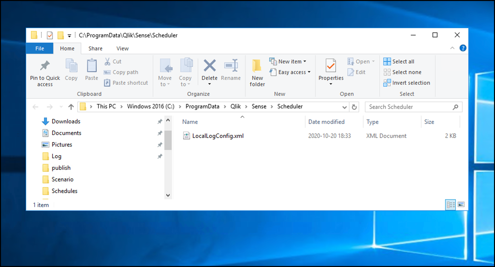

Reload alerts sent as emails
Description of the various kinds of alert emails Butler can send.
Reload alerts are an optional Butler feature.
If alerts are not of interest, the default values in the config file can be left as they are. Do note though that Butler expects the configuration properties below to exist in the config file, but will ignore their values if the related features are disabled.
In order for Butler initiated alerts to become a reality, Butler must somehow be notified that the event of interest (for example a failed app reload) has taken place.
This is achieved by adding a log appender to Qlik Sense Enterprise on Windows.
Log appenders offer a way to hook into Qlik Sense’s logging subsystem, which is called log4net.
By adding a carefully crafted .xml file in the right location on the Sense server(s), you can make Sense notify Butler by means of UDP messages when the events of interest occur. Conceptually it looks like this:

So what happens when a scheduled reload task fails? Let’s look at the steps:
A reload task is started by the Sense scheduler, either on a time schedule or as a result of some other task(s) finishing.
When the reload’s state changes, entries are written to the scheduler log files using the log4net subsystem (which is built into Qlik Sense). If the filter defined in the log appender (= the .xml file on the Sense server) matches the log entry at hand, the associated action in the log appender will be carried out.
Log appenders can do all kinds of things, everything from writing custom log files, sending basic emails, writing to databases and much more. Here we’re interested in the log appender sending a UDP message from Qlik Sense to Butler.
The log appender provided as part of Butler will make log4net send a UDP message to Butler, including various info about the reload task that just failed or was stopped.
Butler will look at the incoming event and determine what its about. For example: Is the event about a reload task failure, a reload that has been aborted/stopped, end user sessions starting/stopping, connections to the Sense engine opening/closing etc.
This is thus a dispatcher that then sends the event to the relevant handler function within Butler.
Response times are usually very good - Butler will typically get the UDP message within a few seconds, with alerts going out shortly thereafter. You are thus looking at close to real-time alerts.
This is possibly the trickiest part to get right when it comes to setting up log4net based alerts.
Still, if you start from the sample .xml file provided in the Butler repository on GitHub it’s not too hard.
The steps are:
In this case you want to be notified when certain events occur in the scheduler log files.
This is important: Qlik Sense Enterprise on Windows consists of many different subsystems (engine, proxy, scheduler, printing etc) - here you’re interested in log events from the scheduler subsystem.
Add a file LocalLogConfig.xml in the C:\ProgramData\Qlik\Sense\Scheduler folder on the Sense server whose scheduler you want to get events from. If you have multiple Sense servers with schedulers running on them, the .xml file should be deployed on each server (assuming you want events from all the servers).
The contents of LocalLogConfig.xml will determine what events are forwarded to Butler, or what other actions will be taken by log4net. See below for examples.
Sense will eventually detect and load the new xml file, but it might take a while. Restarting the Qlik Sense Scheduler Windows service will make the changes take effect immediately.

Here’s the XML that should go into C:\ProgramData\Qlik\Sense\Scheduler\LocalLogConfig.xml to enable the various kinds of Butler task reload alerts.
The remoteAddres property should be set to the host name or IP where Butler is running.
The remotePort property should match the port number specified in Butler’s config file. Note that Butler uses different ports for task related and user activity related events.
The first appender looks for the text “Max retries reached” in the System.Scheduler.Scheduler.Master.Task.TaskSession log stream. That log entry will be created when a reload task has failed and also carried out all its retries. Once the search string is found a UDP message will be sent to port 9998 on IP 10.11.12.13.
The second appender looks for “Execution State Change to Aborting” in the System.Scheduler.Scheduler.Master.Task.TaskSession log stream. That log entry occurs when a user stops a running reload from the QMC’s task view, or using the Sense APIs. When the search string is found a UDP message is once again sent to 10.11.12.13:9998, but with a different messsage (as specified in the conversionpattern property of the appender).
<?xml version="1.0"?>
<configuration>
<!-- Appender for detecting reload task failures. Only the last of potentially several retries is reported -->
<appender name="TaskFailureLogger" type="log4net.Appender.UdpAppender">
<filter type="log4net.Filter.StringMatchFilter">
<param name="stringToMatch" value="Max retries reached" />
</filter>
<filter type="log4net.Filter.DenyAllFilter" />
<param name="remoteAddress" value="10.11.12.13" />
<param name="remotePort" value="9998" />
<param name="encoding" value="utf-8" />
<layout type="log4net.Layout.PatternLayout">
<converter>
<param name="name" value="hostname" />
<param name="type" value="Qlik.Sense.Logging.log4net.Layout.Pattern.HostNamePatternConverter" />
</converter>
<param name="conversionpattern" value="%hostname;%property{TaskName};%property{AppName};%property{User};%property{TaskId};%property{AppId};%date;%level;%property{ExecutionId};%message" />
</layout>
</appender>
<!-- Appender for detecting aborted reloads -->
<appender name="AbortedReloadTaskLogger" type="log4net.Appender.UdpAppender">
<filter type="log4net.Filter.StringMatchFilter">
<param name="stringToMatch" value="Execution State Change to Aborting" />
</filter>
<filter type="log4net.Filter.DenyAllFilter" />
<param name="remoteAddress" value="10.11.12.13" />
<param name="remotePort" value="9998" />
<param name="encoding" value="utf-8" />
<layout type="log4net.Layout.PatternLayout">
<converter>
<param name="name" value="hostname" />
<param name="type" value="Qlik.Sense.Logging.log4net.Layout.Pattern.HostNamePatternConverter" />
</converter>
<param name="conversionpattern" value="/scheduler-reload-aborted/;%hostname;%property{TaskName};%property{AppName};%property{User};%property{TaskId};%property{AppId};%date;%level;%property{ExecutionId};%message" />
</layout>
</appender>
<!-- Send message to Butler on task failure -->
<!-- Send message to Butler on task abort -->
<logger name="System.Scheduler.Scheduler.Master.Task.TaskSession">
<appender-ref ref="TaskFailureLogger" />
<appender-ref ref="AbortedReloadTaskLogger" />
</logger>
</configuration>
The above configuration is enough to support all task reload alerts currently supported by Butler.
If you are happy with the more basic/limited reload-failed alert emails provided by log4net, you can add a SMTP appender like this (the example below is for sending emails using Google GMail, customise as needed):
<?xml version="1.0"?>
<configuration>
<!-- Mail appender-->
<appender name="MailAppender" type="log4net.Appender.SmtpAppender">
<filter type="log4net.Filter.StringMatchFilter">
<param name="stringToMatch" value="Message from ReloadProvider" />
</filter>
<filter type="log4net.Filter.DenyAllFilter" />
<evaluator type="log4net.Core.LevelEvaluator">
<param name="threshold" value="ERROR"/>
</evaluator>
<param name="to" value="<email address to send failed task notification emails to>" />
<param name="from" value="<sender email address used in notification emails>" />
<param name="subject" value="Qlik Sense failed task (server <servername>)" />
<param name="smtpHost" value="smtp.gmail.com" />
<param name="port" value="587" />
<param name="EnableSsl" value="true" />
<param name="Authentication" value="Basic" />
<param name="username" value="<Gmail username>" />
<param name="password" value="<Gmail password>" />
<param name="bufferSize" value="0" /> <!-- Set this to 0 to make sure an email is sent on every error -->
<param name="lossy" value="true" />
<layout type="log4net.Layout.PatternLayout">
<param name="conversionPattern" value="%newline%date %-5level %newline%property{TaskName}%newline%property{AppName}%newline%message%newline%newline%newline" />
</layout>
</appender>
<!--Send mail on task failure-->
<logger name="System.Scheduler.Scheduler.Slave.Tasks.ReloadTask">
<appender-ref ref="MailAppender" />
</logger>
</configuration>
Qlik’s documenation around log appenders and how to hook into the Sense logs is somewhat brief, but does provide a starting point if you want to dive deeper into this topic.
The main log4net documentation (log4net is the logging framework used by Qlik Sense Enterprise) can also be useful.
These links describe how emails can be sent from the log4net logging framework itself, directly to the recipient. Butler includes sameple XML files for this use case too, but Butler takes things further by using the data in the Sense logs to pull in more data around the failed or stopped reload.
In other words - Butler’s alert emails are significantly more flexible and contain information (such as script logs) that are not availble using purely log4net.
Description of the various kinds of alert emails Butler can send.
Description of how reload alerts can be sent as Slack messages.
Description of how reload alerts can be sent as Microsoft Teams messages.
Description of how reload alerts can be sent as MQTT messages.
Was this page helpful?
Glad to hear it! Please tell us how we can improve.
Sorry to hear that. Please tell us how we can improve.